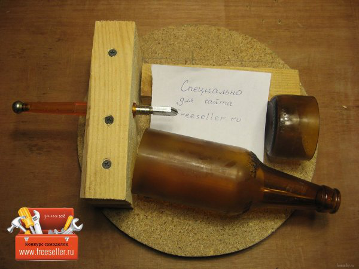
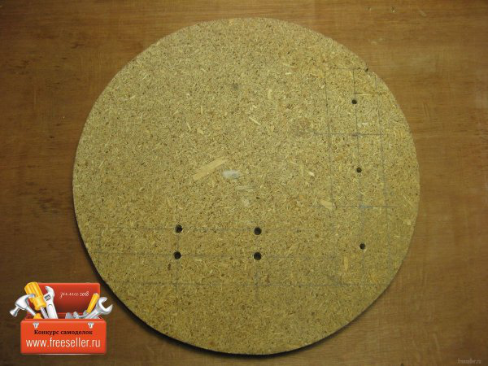
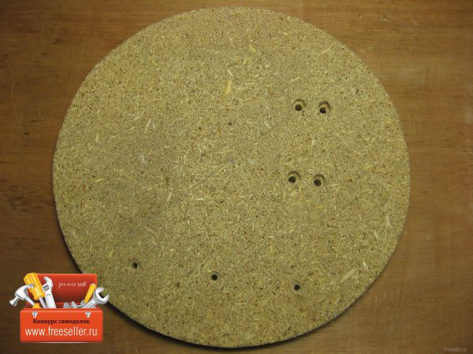
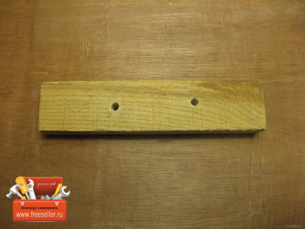
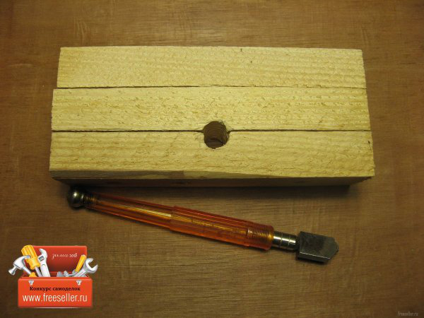
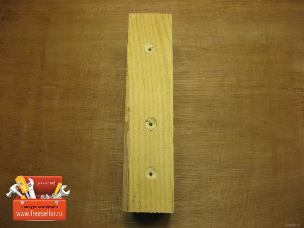
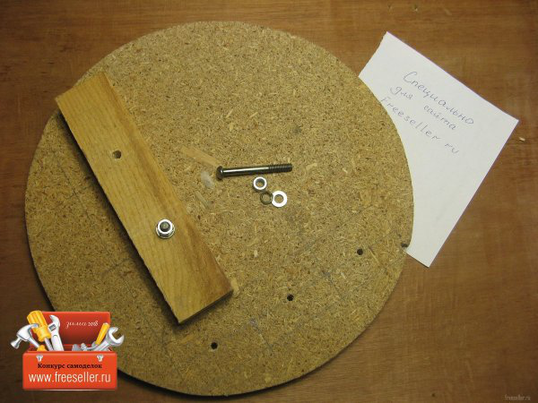
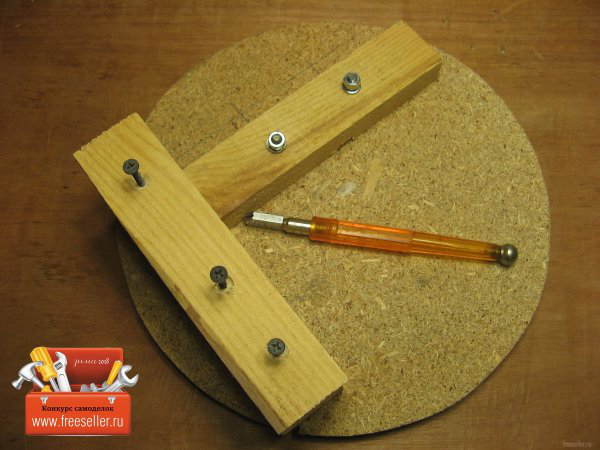
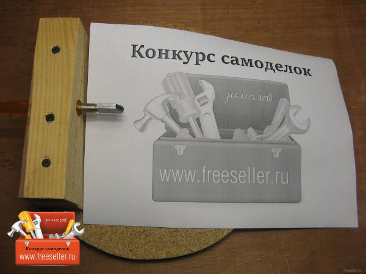
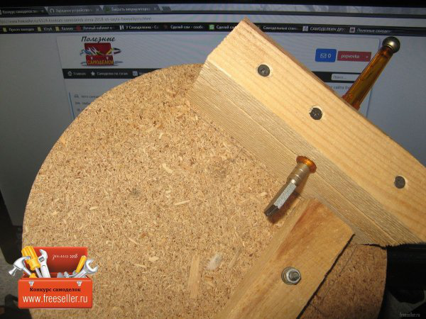

Бутылкорез для дома своими руками
28 января 2018 popvovka 11 комментариев 22 530 просмотров
Как сделать простой бутылкорез для отделения донышек бутылок. Или горлышек, для светильников, подсвечников и т.д.
Понадобилось мне как то отрезать донышко бутылки.
Прикинув как это можно сделать, принял решение о изготовлении подходящей конструкции.

Необходимые материалы
Изготовление бутылкореза
Для начала делаем разметку и сверлим отверстия. Основа у меня, ДСП круг оставшейся от чего-то. Почему именно так, будет ясно дальше.

С обратной стороны высверливаем полости впотай. В них спрячутся головки саморезов и винтов.

На одном бруске делаем сквозные отверстия. Винты у нас М6, отверстия должны быть чуть больше.
Хоть отверстия не по линии. Но я промазал с разметкой в основании и размечал относительно его.

Далее. Три бруска для удержания стеклореза на нужном уровне. В стыке двух сверлим отверстие под наш стеклорез.

Для скрепления брусков сверлим отверстия на 1.5 мм и высверливаем полости впотай. Хотя полости можно не делать.

Прикручиваем брусок с отверстиями под М6 и прикручиваем винтами.

Три бруска прикручиваем к основанию снизу, а сверху затягиваем наш стеклорез.

Отрезать бутылку очень просто. Упираем дном в брусок с винтами и крутим, тем самым режем стеклорезом. Упорный брусок у меня регулируется. Можно отрезать и другой высоты донышко. Потом наш шов окунаем в кипяток и когда бутылка прогреется, окунаем в холодную (лучше ледяную воду) и дно хорошо отламывается.

